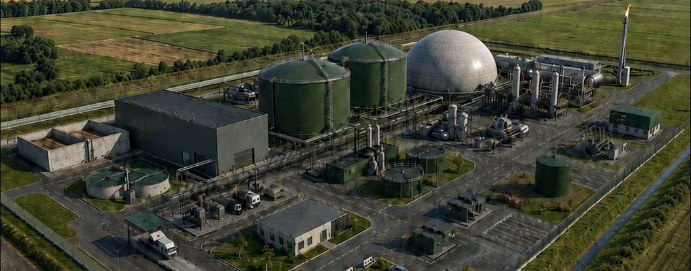

Biometanová infrastruktura • Polsko
Rozvíjíme novou generaci obnovitelného plynu.
ZK nextgen energy s.r.o. připravuje biometanové projekty v Polsku se zaměřením na plynárenskou infrastrukturu, využití organických surovin a dlouhodobou energetickou odolnost.
O projektu
Biometan jako součást energetické transformace Polska.
Naším cílem je připravovat kvalitní biometanové projekty, které propojují obnovitelný plyn, zhodnocení organických vstupů a praktickou energetickou infrastrukturu.
Zaměřujeme se na technickou přípravu, komerční strukturu, přístup k surovinám a budoucí využití biometanu v plynárenské síti i průmyslu.

Průmyslový koncept biometanové stanice pro výrobu obnovitelného plynu.
Obnovitelný plyn
Biometan lze využívat v plynárenské infrastruktuře, průmyslu i dalších aplikacích.
Reálná infrastruktura
Projekt stojí na fyzických aktivech, technickém řešení a dlouhodobém provozním využití.
Cirkulární ekonomika
Organické suroviny se mění na obnovitelný plyn a další využitelné výstupy.
Energetická bezpečnost
Lokální výroba plynu může posílit odolnost a diverzifikaci dodávek energie.
Jak to funguje
Od organických surovin k biometanu.
Biometan vzniká zpracováním organických materiálů v anaerobní digesci, čištěním vzniklého bioplynu a jeho úpravou na obnovitelný plyn energetické kvality.
Suroviny
Bioodpad, kejda, siláž a další organické vstupy.
Anaerobní digesce
Rozklad organické hmoty bez přístupu kyslíku a vznik bioplynu.
Úprava bioplynu
Čištění plynu a odstranění CO₂ pro dosažení kvality biometanu.
Biometan
Obnovitelný plyn připravený pro využití v síti, průmyslu nebo energetice.
Přínosy
Biometan spojuje dekarbonizaci s praktickou infrastrukturou.
Biometan je skladovatelný, flexibilní a kompatibilní s existující plynárenskou infrastrukturou. Umožňuje využití organických toků a současně podporuje odolnější energetický systém.
- nižší emisní stopa oproti fosilnímu plynu
- praktický model zhodnocení odpadu a vedlejších toků
- infrastrukturní charakter s dlouhodobým využitím
Interaktivní odhad
Model roční výroby
Roční objem16,0 mil. Nm³
Energetický ekvivalent169,6 GWh
Pouze orientační model. Skutečné hodnoty závisí na surovinách, technologii, obsahu metanu a provozních parametrech.
Tým
Tým stojící za projektem.
Vývoj projektu propojuje obchodní přípravu, technickou koordinaci a dlouhodobou vizi v oblasti obnovitelného plynu.
Jan Kvapil
CEO
Zodpovídá za development projektu, obchodní strategii a komunikaci s partnery.
Petr Zelenka
CTO
Zodpovídá za technický koncept, koordinaci engineeringu a podporu technologického řešení.
Kontakt
Pojďme probrat development biometanu v Polsku.
V případě investičních, developerských, technologických nebo strategických dotazů kontaktujte přímo Jana Kvapila.
E-mail
kvapil.develop@gmail.com